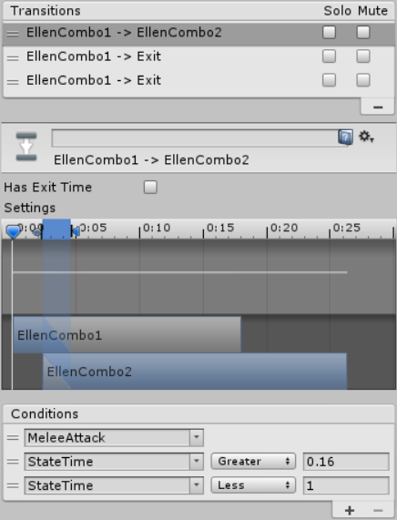

This page is part of the 3D Game Kit example.
Most combat games feature attack combos where performing multiple attacks in quick succession will use various different animations in a sequence which resets to the beginning if you stop attacking or reach the end, which is what we have here:

Original
The original character's MeleeCombatSM state is a Sub State Machine containing several Attack animations:

At first glance, the general concept is easy to understand - it will start with the first Attack animation (EllenCombo1) and continue to each of the others in order if you keep trying to attack - but as usual, the specific implementation of that logic is scattered all over the place:
PlayerInput.Updatechecks for the attack input in order to start theAttackWaitcoroutine.AttackWaitsetsm_Attack = true;then waits for 0.03 seconds, then sets it back tofalse. This is a dirty hack to ensure that the input doesn't get missed in case there are multipleUpdates in a row without aFixedUpdatebetween them, but otherwise it's an arbitrary amount of time which is too small to have any other use.PlayerController.FixedUpdateresets theMeleeAttacktrigger in the Animator Controller every frame and then sets it if the above input was detected. This means it should just be a bool parameter since the features of a trigger aren't even being used.FixedUpdatealso gets the normalized time of the current state from the Animator Controller and sends it back into theStateTimeparameter.- The Animator Controller uses the
MeleeAttacktrigger to transition into theMeleeCombatSMsub state machine and play the first attack animation (EllenCombo1). FixedUpdatealso callsSetTargetRotationwhich checksif (m_InAttack)in order to turn the player towards a nearby enemy if there is one.- Searching for references to
m_InAttackfinds that the only place it gets set to true is theMeleeAttackStartmethod which has a comment explaining that it is called by an Animation Event. FixedUpdatealso callsPlayAudiowhich plays a sound if one of the attack states was just entered. This is another dirty hack because it does so by checking each of the individual state names (EllenCombo1,EllenCombo2, etc.).- Each of the
EllenCombostates has aStateMachineBehaviourcalledEllenStaffEffectwith anint effectIndexwhich is set in the Inspector. When a state is entered itsOnStateEntermethod gets thePlayerControllerand accesses the effect of their weapon at the specified index in order to callTimeEffect.Activateon it. - That method activates an animated weapon trail and a
Light, then uses a coroutine to wait until the animation finishes to deactivate it. - Each of the
EllenCombostates has various transitions, including one which leads to the next state in the sequence on the conditions thatMeleeAttackis true (meaning the player is trying to attack) and theStateTime(from step #4) is within a certain range.

Note how several of those steps so not directly lead into the next. PlayerInput doesn't just call a method which you can read to in order to find out what it does, instead it sets a value and you need to check everywhere that references that value to find out what effect it will have. This is a big part of what makes the setup so convoluted.
Animancer
The Animancer character handles all the above logic in the AttackState script which makes the flow of logic far easier to understand:
using Animancer;
using Animancer.FSM;
using System;
using UnityEngine;
public sealed class AttackState : CreatureState
{
[Serializable]
public class AttackClip : ClipState.Transition
{
[SerializeField]
[Tooltip("The normalized time when this attack will begin transitioning back to idle")]
[Range(0, 1)]
private float _EndNormalizedTime = 0.75f;
public float EndNormalizedTime
{
get { return _EndNormalizedTime; }
}
[SerializeField]
private AttackTrail _Trail;
public override void Apply(AnimancerState state)
{
base.Apply(state);
_Trail.Activate();
}
}
[SerializeField] private float _TurnSpeed = 400;
[SerializeField] private RandomAudioPlayer _WeaponAudio;
[SerializeField] private RandomAudioPlayer _EmoteAudio;
[SerializeField] private AttackClip[] _Animations;
private int _AttackIndex = int.MaxValue;
private AttackClip _Attack;
public override bool CanEnterState(CreatureState previousState)
{
return Creature.CharacterController.isGrounded;
}
private void OnEnable()
{
if (_AttackIndex >= _Animations.Length - 1 ||
_Animations[_AttackIndex].State.Weight == 0)
{
_AttackIndex = 0;
}
else
{
_AttackIndex++;
}
_Attack = _Animations[_AttackIndex];
Animancer.Transition(_Attack);
_WeaponAudio.PlayRandomClip();
_EmoteAudio.PlayRandomClip();
Creature.ForwardSpeed = 0;
}
public override bool FullMovementControl { get { return false; } }
private void FixedUpdate()
{
if (Creature.CheckMotionState())
return;
Creature.TurnTowards(Creature.Brain.Movement, _TurnSpeed);
}
public override bool CanExitState(CreatureState nextState)
{
return _Attack.State.NormalizedTime >= _Attack.EndNormalizedTime;
}
}
Well, not quite all the logic:
Buffered Input
The initial input check is handled by the KeyboardAndMouseBrain script.
It starts with a reference to the Attack state which is assigned in the Inspector.
[SerializeField] private CreatureState _Attack;
Note that this is the only place where the Attack state is actually referenced. The Creature script has references to the core states - Respawn, Idle, Locomotion, and Airborne - but none of them know anything about the ability to attack.
In the original character (step #11 above), each attack had a window of time during which you could press the attack button to perform the next attack in the combo. These windows were defined in the transition conditions which made them tricky to work with for two main reasons:
- You can't view more than one at a time and it takes two clicks to swap between them.
- Since the
StateTimeparameter is actually set using the state's normalized time, it's hard to judge how much time a particular value actually represents.
Instead of trying to replicate that setup, the Animancer character instead uses a concept known as input buffering which simply means that if a button press fails to trigger the desired action, it will still be able to do so for a short time afterwards. Fortunately, Animancer's Finite State Machine system has an InputBuffer class which is very easy to use. So we make a time out field to determine how long the buffer will last and initialise it with the StateMachine it will be buffering:
[SerializeField] private float _AttackInputTimeOut = 0.5f;
private StateMachine<CreatureState>.InputBuffer _InputBuffer;
private void Awake()
{
_InputBuffer = new StateMachine<CreatureState>.InputBuffer(Creature.StateMachine);
}
Then when we detect the Attack button being pressed and would normally call Creature.StateMachine.TrySetState(_Attack) we instead call a similar method on the InputBuffer where we also specify the time out duration:
private void Update()
{
...
if (Input.GetButtonDown("Fire1"))
{
_InputBuffer.TrySetState(_Attack, _AttackInputTimeOut);
}
And on any Update where we didn't just attempt a new action, we update the buffer to give it another chance to retry a previously buffered action and check if it has timed out:
else
{
_InputBuffer.Update();
}
}
Using the same 0.5 second window for every attack gives much more consistent gameplay where the player can get a feel for when they will need to press the button rather than arbitrarily varying it for every attack.
Attack Details
Now that we've taken care of getting into the AttackState, we want to make an array of AnimationClips with some additional details such as transition timings. This is what Transitions like ClipState.Transition are good for, but we want a few more details so we declare a class that inherits from it:
[Serializable]
public class AttackClip : ClipState.Transition
{
The first thing we want is a value to determine when we want the animation to end:
[SerializeField]
[Tooltip("The normalized time when this attack will begin transitioning back to idle")]
[Range(0, 1)]
private float _EndNormalizedTime = 0.75f;
public float EndNormalizedTime
{
get { return _EndNormalizedTime; }
}
We also want an AttackTrail, which is the visual light trail effect that appears when swinging the weapon
[SerializeField]
private AttackTrail _Trail;
Rather than exposing it publicly for the AttackState to activate when it plays this attack, we can override the Apply method to handle that responsibility internally:
public override void Apply(AnimancerState state)
{
base.Apply(state);
_Trail.Activate();
}
}
If we wanted the ability to tweak the speed of the attack animation, we would also need to pass that speed onto the trail so it gets shown correctly in relation to the character.
The AttackTrail script is a cleaned up copy of the TimeEffect script used by the original character (renamed because the original name was misleading, though there might still be a better possibility):
using System.Collections;
using UnityEngine;
public sealed class AttackTrail : MonoBehaviour
{
[SerializeField] private Light _Light;
[SerializeField] private Animation _Animation;
#if UNITY_EDITOR
private void Reset()
{
_Light = Editor.AnimancerEditorUtilities.GetComponentInHierarchy<Light>(gameObject);
_Animation = Editor.AnimancerEditorUtilities.GetComponentInHierarchy<Animation>(gameObject);
gameObject.SetActive(false);
}
#endif
public void Activate()
{
gameObject.SetActive(true);
_Light.enabled = true;
_Animation.Play();
StartCoroutine(DisableAtEndOfAnimation());
}
private IEnumerator DisableAtEndOfAnimation()
{
yield return new WaitForSeconds(_Animation.clip.length);
gameObject.SetActive(false);
_Light.enabled = false;
}
}
Fields
Now that we have made the AttackClip class to encapsulate the details we want, we can make some serialized fields to show in the Inspector:
[SerializeField] private float _TurnSpeed = 400;
[SerializeField] private RandomAudioPlayer _WeaponAudio;
[SerializeField] private RandomAudioPlayer _EmoteAudio;
[SerializeField] private AttackClip[] _Animations;
Logically, the _Animations array should probably be first because it gets used first and is most important, however putting the unique fields first instead makes the Inspector a bit easier to read.
We also need some non-serialized fields to remember the index of the current attack (to play the next one in the sequence when the player attacks repeatedly) and keep a direct reference to that attack for use later on:
private int _AttackIndex = int.MaxValue;
private AttackClip _Attack;
State Entry
Note how we initialise the index to start at int.MaxValue so that the first condition checked by OnEnable is true the first time it is used (see below).
In this example, we only allow attacking while grounded:
public override bool CanEnterState(CreatureState previousState)
{
return Creature.CharacterController.isGrounded;
}
Plenty of other games have airborne attacks as well, which could be achieved by giving this state an Inspector bool to determine whether it is for ground or air attacks, or by giving it a second array of AttackClips to use when airborne.
When entering this state, we start by determining which attack in the sequence we are up to. If the previous attack was the last one or it has already fully faded out, we want the first attack, but otherwise we can go to the next one in line:
private void OnEnable()
{
if (_AttackIndex >= _Animations.Length - 1 ||
_Animations[_AttackIndex].State.Weight == 0)
{
_AttackIndex = 0;
}
else
{
_AttackIndex++;
}
Now that the attack has been chosen, we can play it along with some sounds (_WeaponAudio is the physical sword swing while _EmoteAudio is the vocal grunt) and cancel out the character's forward speed:
_Attack = _Animations[_AttackIndex];
Animancer.Transition(_Attack);
_WeaponAudio.PlayRandomClip();
_EmoteAudio.PlayRandomClip();
Creature.ForwardSpeed = 0;
}
Updates
While this state is active, we want to apply the raw root motion from the attack animations so we disable FullMovementControl:
public override bool FullMovementControl { get { return false; } }
This FixedUpdate method is the simplest of any state, we just Check the standard transitions (Idle, Locomotion, or Airborne as appropriate) and turn in the direction the Creature.Brain wants to go:
private void FixedUpdate()
{
if (Creature.CheckMotionState())
return;
Creature.TurnTowards(Creature.Brain.Movement, _TurnSpeed);
}
On its own, CheckMotionState would immediately go to a different state, however we want to prevent other actions from interrupting attacks until they are done so we override CanExitState to base its answer on the time of the current attack:
public override bool CanExitState(CreatureState nextState)
{
return _Attack.State.NormalizedTime >= _Attack.EndNormalizedTime;
}
This means that once the specified time passes, the next FixedUpdate will change to one of the standard states (and that state will be responsible for fading in its own animation). If the Input Buffer is attempting to attack again, it will then do so next time it is updated, which will enter this state again. Since the attack animation that just ended would still be fading out at that point, the OnEnable method would then move it onto the next attack in the sequence.
If we had states like Hurt and Dead, we could use the ideas covered in the Interrupt Management example to allow them to interrupt this state regardless of the time.
Adding More Attacks
Much like if we want to add more idle animations, building this state to use an array makes it much easier to modify the general behaviour and set up any number of animations without needing to set up the same states, transitions, and StateMachineBehaviours every time.